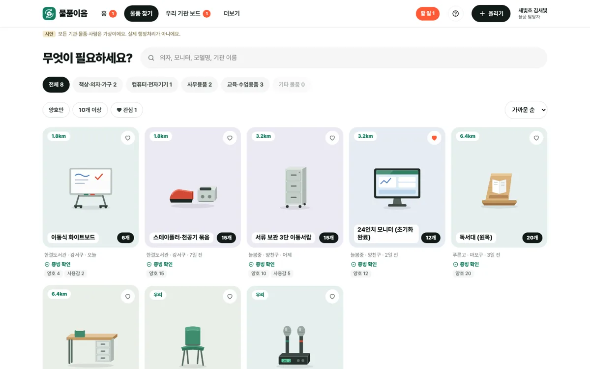
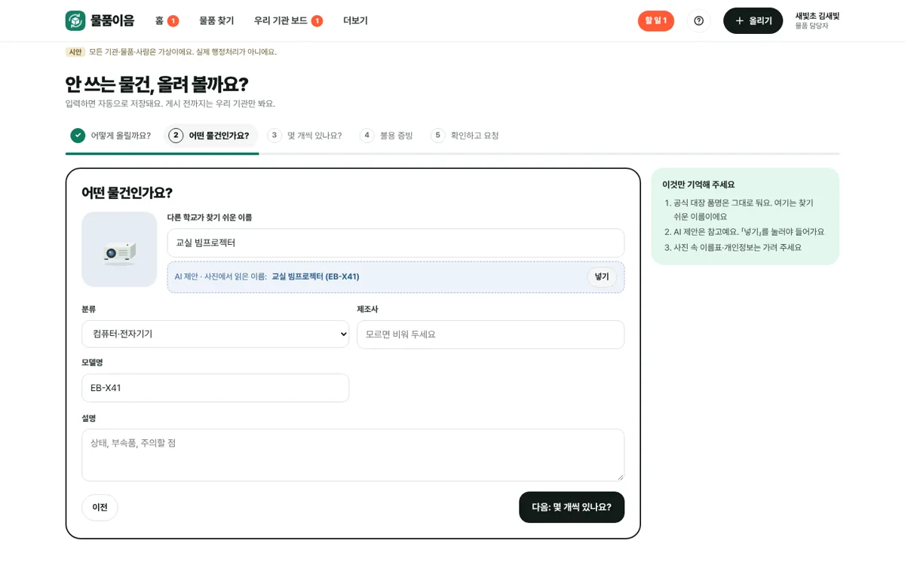
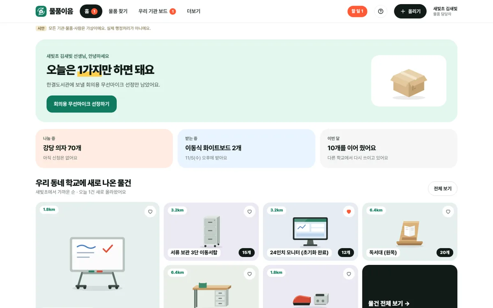

디자인 시안을 3분 안에 볼 수 있게 줄였어요. 완성본이 아니라 방향을 맞추려는 초안이에요. 편하게 고칠 점을 알려 주세요.
| 품명 | 규격 | 수량 | 취득단가 |
|---|---|---|---|
| 화이트보드 | 1200×900 | 6 | 180,000 |
| 서류함 | 3단 | 15 | 95,000 |
| 모니터 | 24인치 | 12 | 210,000 |
| 독서대 | 원목 | 20 | 12,000 |
받는 학교는 이렇게 생각해요. 「상태가 어떻지? 바퀴는 있나? 직접 가서 봐야 하나?」 → 확인할 게 많아서 그냥 넘겨요.

「어, 우리 3학년 교실에 딱인데?」 → 사진에 상태·수량·거리가 같이 보여서 바로 신청해요.
사람은 글자 목록보다 사진을 보고 「갖고 싶다」를 느껴요. 신청이 늘어야 버려지는 물건이 줄어요.
사용감, 크기, 부속품을 사진으로 미리 보면 「가 보니 못 쓰겠네」가 줄어요.
불용결정·대장 정리는 에듀파인에서 해요. 물품이음은 그 사이 「찾고 고르는 것」을 쉽게 해요.
질문: 받는 학교가 고를 때 더 필요한 정보가 있을까요?

질문: 담당자가 사진을 찍어 올릴 때, 휴대폰으로 할까요 PC로 할까요?

질문: 담당자가 들어오자마자 가장 먼저 알고 싶은 건 뭘까요?
서버 규칙(작성자는 스스로 게시 못 함, 수량 다르면 멈춤 등)은 하나도 바꾸지 않았어요. 화면만 바꾼 시안이에요.
업무매뉴얼과 사례집을 읽고 만든 초안이라, 현장과 다른 부분이 있을 수 있어요. 시안 속 그림은 진짜 사진이 들어갈 자리이고, 기관·물건은 모두 가상이에요. 틀린 부분을 짚어 주시면 바로 고칠게요.